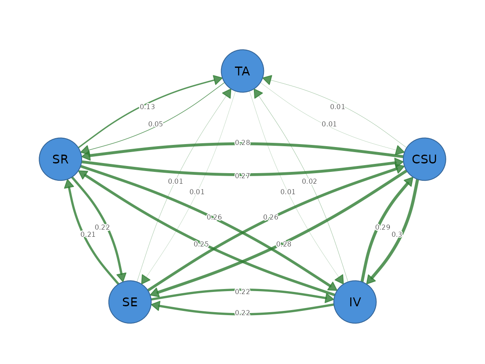

Relative-importance networks
Written by Mohammed Saqr and Sonsoles López-Pernas
Source:vignettes/relative-importance-networks.Rmd
relative-importance-networks.RmdWhen the variables of a questionnaire are strongly correlated, a regression coefficient or a partial correlation credits each predictor only with its unique contribution, and the variance that two predictors explain together is credited to neither. For a researcher who asks how much self-efficacy contributes to explaining strategy use, that unique contribution understates the answer. Relative importance analysis divides the explained variance of an outcome, its , among all predictors, giving each a share of both its unique and its jointly explained variance. The LMG decomposition (Lindeman et al., 1980; Groemping, 2006) does so by averaging the increase in that a predictor brings over every order in which the predictors could be entered.
A relative-importance network applies this decomposition to every variable in turn, with all the others as predictors. The shares become directed edges: an edge from A to B is the part of B’s explained variance attributed to A, and the edges arriving at a node sum to that node’s . This article builds the network for five self-regulated learning constructs, reads the directed shares, checks that they sum to each node’s explained variance, contrasts incoming and outgoing totals, and repeats the analysis on rank correlations.
Data
SRL_GPT holds 300 sets of responses to the Motivated
Strategies for Learning Questionnaire, each a construct score on a scale
from 1 to 7. The responses were generated by a large language model
(GPT) in a study of how such models answer psychological surveys (Saqr,
2025); they serve as a well-structured example and are not evidence
about students.
-
Nodes: five construct scores, treated as
continuous:
CSU(cognitive strategy use),IV(intrinsic value),SE(self-efficacy),SR(self-regulation) andTA(test anxiety). Each is in turn the outcome of a linear regression and a predictor in the four others. - Observations: one row per respondent; the data are complete.
head(SRL_GPT)
#> CSU IV SE SR TA
#> 1 5.307692 5.666667 5.777778 5.333333 4.00
#> 2 5.846154 6.444444 6.000000 5.777778 4.00
#> 3 6.615385 6.666667 6.222222 6.333333 3.25
#> 4 5.692308 6.555556 6.333333 5.555556 4.50
#> 5 4.384615 5.555556 4.888889 4.777778 4.00
#> 6 4.846154 5.444444 5.666667 5.111111 3.50The model
For outcome with predictor set , the LMG share of predictor is the average increase in when joins a subset of the other predictors, weighted so that every entry order counts equally:
Each follows from the correlation matrix as . The shares are non-negative and add up to the outcome’s full-model explained variance,
The directed network has edge weight from to . The incoming edges of a node sum to its ; the outgoing edges of a node sum to its total contribution to the other regressions. With nodes, each outcome requires subset regressions, so the computation is limited to 21 nodes by default.
How is each construct’s explained variance divided?
psychnet() with method = "relimp" fits the
five regressions and decomposes their
.
importance_net <- psychnet(data = SRL_GPT, method = "relimp")
summary(importance_net)
#> <psychnet> relimp network
#> nodes: 5 edges: 20 (directed)
#> structural certificate (decomposition residual): 2.22e-16
#> edge weight: range [0.006, 0.299], mean 0.165The network has 20 directed edges, one for every ordered pair,
because every predictor receives some share. The shares range from 0.006
to 0.299. The edge table lists them with from as the
predictor and to as the outcome:
as.data.frame(importance_net)
#> from to weight
#> 1 IV CSU 0.288505266
#> 2 SE CSU 0.263574096
#> 3 SR CSU 0.274082666
#> 4 TA CSU 0.007326148
#> 5 CSU IV 0.299473895
#> 6 SE IV 0.216286692
#> 7 SR IV 0.258608009
#> 8 TA IV 0.007032583
#> 9 CSU SE 0.280588934
#> 10 IV SE 0.219009605
#> 11 SR SE 0.220573037
#> 12 TA SE 0.006045547
#> 13 CSU SR 0.277393999
#> 14 IV SR 0.253052645
#> 15 SE SR 0.212824511
#> 16 TA SR 0.052422918
#> 17 CSU TA 0.014154964
#> 18 IV TA 0.015416846
#> 19 SE TA 0.012055817
#> 20 SR TA 0.127772080The largest share runs from cognitive strategy use to intrinsic value (0.299): of the variance in intrinsic value explained by the other four constructs, a share of 0.299 is attributed to strategy use. The reverse edge, from intrinsic value to strategy use, is 0.289. The two directions are close here but come from different regressions, and they need not agree. Among the learning constructs the shares lie between 0.213 and 0.299, so each is explained by the other three in roughly equal parts.
Test anxiety is the exception. Of its explained variance, self-regulation accounts for 0.128, while cognitive strategy use (0.014), intrinsic value (0.015) and self-efficacy (0.012) contribute little. In the other direction, test anxiety contributes almost nothing to the learning constructs (0.006 to 0.007), except to self-regulation (0.052). The association between test anxiety and the learning constructs passes through self-regulation, in both directions.
Do the shares add up to each construct’s explained variance?
By construction, the shares arriving at a node must sum to that
node’s full-model
.
certificate() reports the largest difference between the
two across nodes; a value near zero shows that the decomposition is
complete and exact.
certificate(importance_net)
#> method certificate kind certified
#> 1 relimp 2.220446e-16 structural TRUEThe largest difference is at the level of machine precision (below ), so every edge in the table is part of an exact division of the explained variance. The check concerns the arithmetic of the decomposition, not the adequacy of the linear regressions.
How much of each construct is explained?
net_predict() reports the full-model
of each node, the total of its incoming shares.
net_predict(importance_net)
#> node type metric predictability accuracy
#> 1 CSU gaussian R2 0.8334882 NA
#> 2 IV gaussian R2 0.7814012 NA
#> 3 SE gaussian R2 0.7262171 NA
#> 4 SR gaussian R2 0.7956941 NA
#> 5 TA gaussian R2 0.1693997 NAThe other four constructs explain 83% of the variance in cognitive strategy use (), 80% in self-regulation, 78% in intrinsic value and 73% in self-efficacy. They explain 17% of the variance in test anxiety (), and the incoming shares above show that three quarters of that (0.128) comes from self-regulation. Most of the variation in test anxiety lies outside this five-construct model.
Which constructs contribute most to explaining the others?
net_centralities() sums the outgoing edges of each node.
Because all shares are non-negative, strength and expected influence are
equal.
net_centralities(importance_net)
#> node strength expected_influence
#> 1 CSU 0.8716118 0.8716118
#> 2 IV 0.7759844 0.7759844
#> 3 SE 0.7047411 0.7047411
#> 4 SR 0.8810358 0.8810358
#> 5 TA 0.0728272 0.0728272Self-regulation has the largest outgoing total (0.881), closely followed by cognitive strategy use (0.872); test anxiety has the smallest (0.073). Self-regulation is thus the construct that contributes most to explaining the others, partly because it is the only construct with a substantial share in test anxiety. Incoming totals () describe how well a construct is explained; outgoing totals describe how much it explains. The two answer different questions and are reported separately.
What does the network look like?
cograph::splot() draws the directed network, with arrows
from predictor to outcome and the share printed on each edge.
cograph::splot(importance_net, directed = TRUE, edge_labels = TRUE)
The figure is dense because every ordered pair has an edge. The thick reciprocal arrows among the learning constructs and the thin arrows to and from test anxiety are visible, but exact values are read from the edge table.
Do the conclusions depend on the correlation estimator?
Refitting with cor_method = "spearman" bases the
regressions on rank correlations.
importance_spearman <- psychnet(data = SRL_GPT, method = "relimp",
cor_method = "spearman")
as.data.frame(importance_spearman)
#> from to weight
#> 1 IV CSU 0.286725129
#> 2 SE CSU 0.270159694
#> 3 SR CSU 0.265419989
#> 4 TA CSU 0.005393971
#> 5 CSU IV 0.299066051
#> 6 SE IV 0.203370231
#> 7 SR IV 0.263749828
#> 8 TA IV 0.005279123
#> 9 CSU SE 0.292490014
#> 10 IV SE 0.206036816
#> 11 SR SE 0.209495026
#> 12 TA SE 0.004346020
#> 13 CSU SR 0.271471270
#> 14 IV SR 0.260383389
#> 15 SE SR 0.203334385
#> 16 TA SR 0.037126693
#> 17 CSU TA 0.009240756
#> 18 IV TA 0.011339759
#> 19 SE TA 0.008842802
#> 20 SR TA 0.086215285
net_predict(importance_spearman)
#> node type metric predictability accuracy
#> 1 CSU gaussian R2 0.8276988 NA
#> 2 IV gaussian R2 0.7714652 NA
#> 3 SE gaussian R2 0.7123679 NA
#> 4 SR gaussian R2 0.7723157 NA
#> 5 TA gaussian R2 0.1156386 NAThe largest share remains cognitive strategy use to intrinsic value (0.299), and the learning constructs keep values from 0.712 to 0.828. The explained variance of test anxiety falls from 0.169 to 0.116, and the share of self-regulation in it from 0.128 to 0.086. The structure among the learning constructs does not depend on the estimator; the explanation of test anxiety is weaker on ranks and should be reported with that caveat.
Reporting the analysis
A report states the variables, the sample size, the correlation estimator, the treatment of missing data, and whether raw or normalized shares are used. Each edge is described with its direction, from predictor to outcome, and incoming and outgoing contribution are reported as separate node summaries.
In this analysis, raw LMG shares from Pearson correlations of 300 complete responses formed 20 directed edges. The largest ran from cognitive strategy use to intrinsic value (0.299). The constructs’ ranged from 0.169 (test anxiety) to 0.833 (cognitive strategy use), and self-regulation carried most of the explained variance of test anxiety (0.128). A rank-based analysis kept the structure among the learning constructs and reduced the explained variance of test anxiety.
Assumptions and when to use relative importance
- Each node is modelled by a linear regression on all the others; the shares inherit its assumptions of linearity and of observations independent of one another.
- Relative importance answers how explained variance is divided among correlated predictors. For conditional associations between pairs, use a partial correlation network such as the graphical lasso.
- Raw shares keep the variance scale, so a share of 0.1 means one
tenth of the outcome’s variance.
normalized = TRUErescales the incoming shares of each outcome to sum to one, which compares predictors within an outcome but hides how much of the outcome is explained at all. - Direction refers to the regression, not to time or causation: an edge from A to B means that A is a predictor of B in the fitted model.
- The number of subset regressions doubles with every added node, which limits the method to small and moderate networks.
References
Groemping, U. (2006). Relative importance for linear regression in R: The package relaimpo. Journal of Statistical Software, 17(1), 1-27. doi:10.18637/jss.v017.i01
Lindeman, R. H., Merenda, P. F., & Gold, R. Z. (1980). Introduction to bivariate and multivariate analysis. Scott, Foresman.
Saqr, M. (2025). Delving into the psychology of machines: Exploring the structure of self-regulated learning via LLM-generated survey responses. Computers in Human Behavior, 173, 108769. doi:10.1016/j.chb.2025.108769